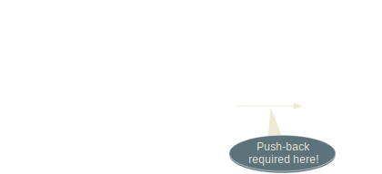
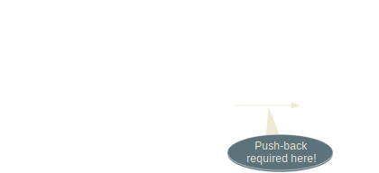
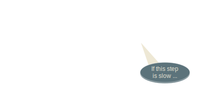
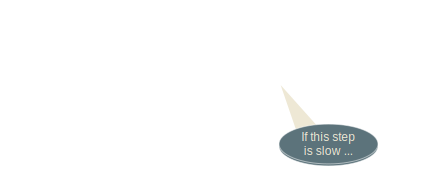
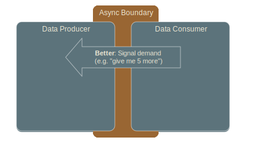
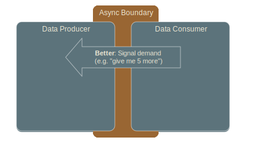
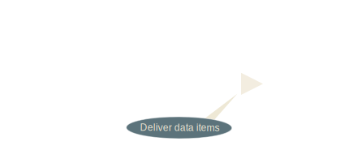
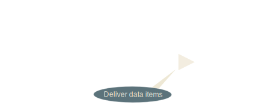

akka-http: (un)REST your actors
ScalaDays 2014-06-17@Berlin
Mathias Doenitz
/
/
This presentation: http://spray.io/scaladays2014/
Why does Akka need an HTTP module?
Isn't this "feature creep"?
Too high-level?
Where is the connection to its "actor heart"?
Akka
"A toolkit and runtime for building
highly concurrent, distributed, and fault-tolerant
event-driven applications on the JVM"
Akka's Promise
"Build powerful
concurrent
concurrent
 &
distributed
distributed
&
distributed
distributed

applications more easily"
Distribution implies Integration
- Between your own (sub-)systems
akka-remoting &akka-cluster - With other (external) systems
akka-http - HTTP is the most successful
integration protocol to date!
akka-http origin: spray.io
- Embeddable HTTP stack
entirely built on Akka actors - Focus: HTTP integration layers
rather than web applications - Server- and client-side
- Fully integrated into Typesafe stack
(threadpools, config, debugging, etc.)
spray features
- Immutable, case-class-based HTTP model
- Fast, lightweight HTTP client and server
- Powerful DSL for server-side API definition
- Fully async & non-blocking,
actor-friendly, modular, testable - Scala & actors "all the way through"
akka-http is spray++
- Across-the-board polishing
- Java APIs
- Simplified module structure
- Core improvement:
Now based on Reactive Streams Reactive Streams
Reactive Streams: Motivation


 

Reactive Streams: Motivation (2)
 


Async Boundary


 



Pipeline Processing Done Right


 

Continuous Pipelines across Machines


Reactive Streams
- Pipelined processing "done right"
- Focus: define passing of data
across an async boundary - Implementations provide DSLs
for stream transformations - Many use cases
- Joint effort of Netflix, Twitter,
Red Hat, Pivotal and Typesafe
Streams in akka-http
- Requests on one HTTP connection
- Responses on one HTTP connection
- Chunks of a chunked message
- Bytes of a message entity
HTTP Stream Interfaces

HTTP Server API
case class ServerBinding(
localAddress: InetSocketAddress,
connectionStream: Producer[IncomingConnection])
case class IncomingConnection(
remoteAddress: InetSocketAddress,
requestProducer: Producer[HttpRequest],
responseConsumer: Consumer[HttpResponse])
Simple HTTP Server
val bindingFuture = IO(Http) ? Http.Bind("localhost", 8080)
bindingFuture foreach { binding ⇒
Flow(binding.connectionStream) foreach { connection ⇒
Flow(connection.requestProducer).map {
case HttpRequest(GET, Uri.Path("/ping"), _, _, _) ⇒
HttpResponse(entity = "PONG!")
case _ ⇒ HttpResponse(404, entity = "Unknown resource!")
}.produceTo(connection.responseOut)
}
}
Basic HTTP Client API
case class OutgoingConnection(
remoteAddress: InetSocketAddress,
localAddress: InetSocketAddress,
processor: HttpClientProcessor[Any])
trait HttpClientProcessor[T]
extends Consumer[(HttpRequest, T)]
with Producer[(HttpResponse, T)]
HTTP Request
case class HttpRequest(
method: HttpMethod = HttpMethods.GET,
uri: Uri = Uri./,
headers: immutable.Seq[HttpHeader] = Nil,
entity: HttpEntity.Regular = HttpEntity.Empty,
protocol: HttpProtocol = HttpProtocols.`HTTP/1.1`
) extends HttpMessage
HTTP Response
case class HttpResponse(
status: StatusCode = StatusCodes.OK,
headers: immutable.Seq[HttpHeader] = Nil,
entity: HttpEntity = HttpEntity.Empty,
protocol: HttpProtocol = HttpProtocols.`HTTP/1.1`
) extends HttpMessage
HTTP Entity
sealed trait HttpEntity
object HttpEntity {
sealed trait Regular extends HttpEntity
case class Strict(contentType: ContentType,
data: ByteString) extends Regular
case class Default(contentType: ContentType, contentLength: Long,
data: Producer[ByteString]) extends Regular
case class Chunked(contentType: ContentType,
chunks: Producer[ChunkStreamPart]) extends Regular
case class CloseDelimited(contentType: ContentType,
data: Producer[ByteString]) extends HttpEntity
}
akka-http Module Structure
akka-http-core - HTTP Model (
spray-http ) - Low-level stack (
spray-can )
- HTTP Model (
akka-http - (Un)marshalling, (De)compression (
spray-httpx ) - Routing DSLs (
spray-routing ) - Testkit (
spray-testkit )
- (Un)marshalling, (De)compression (
- No more
spray-servlet (for now)
akka-http Roadmap
akka-http-core pre-release (almost) out- Complete
akka-http-core on top of
latest Reactive Streams API /akka-stream - Add
akka-http module - Add websockets
- Move Play onto
akka-http (incrementally)
Resources
- Main sites & documentation:
http://akka.io
http://spray.io
http://www.reactive-streams.org/ - Mailing lists:
http://groups.google.com/group/akka-user
http://groups.google.com/group/spray-user - Twitter:
@akkateam, @sprayio